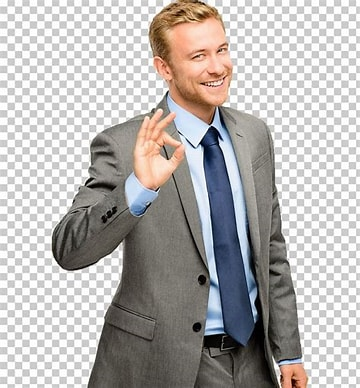

Learn about the team

Aaron is a dedicated team member at EcoStyle, where he works as a sustainability coordinator. With a passion for both fashion and environmental conservation, Aaron plays a key role in ensuring that EcoStyle's products meet the highest standards of sustainability. His expertise in eco-friendly materials and production processes helps the brand source and create clothing that is not only stylish but also minimizes environmental impact.Aaron has been with the company for three years,since 2021.He can be reached at extension 439.
Alan is an integral part of the EcoStyle team, serving as the brand’s creative director. With a keen eye for design and a deep commitment to sustainability, Alan is responsible for shaping the aesthetic direction of EcoStyle’s collections. He works closely with the design and production teams to ensure that each piece of clothing not only meets environmental standards but also reflects the brand’s core values of style, comfort, and responsibility.Alan has been a part of the company since 2022, to get in contact dial extenion 224.
Mike is a crucial member of the EcoStyle team, serving as the operations specialist. With a strong background in logistics and supply chain management, Mike ensures that EcoStyle’s products are sourced, produced, and delivered efficiently while maintaining the brand’s high sustainability standards. He works closely with suppliers and manufacturers to ensure that all materials meet EcoStyle’s ethical and environmental criteria.Mike has been a important member since 2020, his extension is 978.